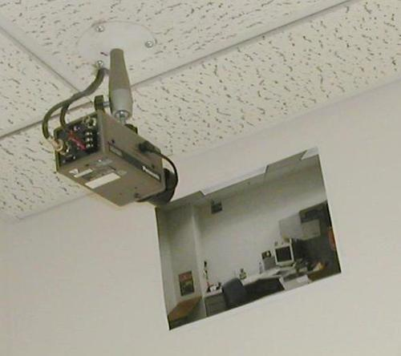
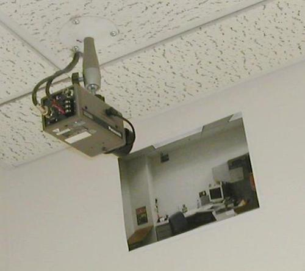

ABSTRACT
[1, 2] Glenn Ballard, Lauri Koskela, “Rhetoric and Design”, International Conference on Engineering Design, University of California Berkeley, United States of America, 2013
[3] Maaike Lauwaert, Francien van Westeren, “Facing Value: Radical perspectives from the arts”, Valiz with Stroom Den Haag, 2017
Language is communication tool being used by everyone. For me it is interesting that it’s structure lays out the basis of society. We use language to give form to our beliefs, thoughts and even feelings, but language is a skill that is acquired at early age. No human being has ever been born speaking. Babies have different ways of expressing themselves. As we grow up, our mind is molded by a framework. It is the way societies are structured and mindsets are created. I refer to the many types of communication that exist. Not only linguistic but visual as well. Design and Rhetoric have an obvious relation. Both are broadly applicable across subject matters, concern the particular and the probable, require invention and judgment, and involve arrangement in space and time. Scholars have conceptualized rhetoric as design limited to words and design as rhetoric with an unlimited palette.[1] Thinkers and makers create value and distribute meaning. Architecture for example takes on the character of oratory in Western traditions, such that the buildings are expected to “say” something.[2] In that matter architecture can be understood as the exercise of power in space. I would like to examine more closely how rhetoric is used to establish a social reality. How do people pack the world into signs?[3] How icons, indexes and sybmols create our conception of reality and value. And the obscure and inadequate ways we make connotations. But to also search for the alternative ways of understanding our perception, by studying in detail the ways we communicate and by searching for connections.
[4, 7] Florian Gramer, Anti-Media - Ephemera on Speculative Arts, Institute of Network Cultures
[5] Jacques Derrida, “Of Grammatology”, 1967
[6] Wikipedia, The free Encyclopedia, Rhetoric; https://en.wikipedia.org/wiki/Rhetoric, 12.05.2019
[8] D. H. Berry, Andrew Erskine, “Form and Function in Roman Oratory”, Google books, https://books.google.nl/books?id=5W7JraeCRu4C&pg=PA3&lpg=PA3&dq=oratorical+uerba&source=bl&ots=eTJq9507nH&sig=VdGtZWXH7FxlOziaycerYDKsH-4&hl=nl&sa=X&ved=0ahUKEwj2t6qInoLbAhXHLlAKHaTyBQwQ6AEIQjAE#v=onepage&q=oratorical%20uerba&f=false; 12.05.2019
Language is in a constant flux. It changes corresponding to society and it changes society in response to itself. It is said to be something rational, but it was also already argued that this statement is untrue. We constructed language in an attempt to rationalize the world around. We decided to create conceptions and give them names on whose truthfulness we commonly agree. It is the way we structure and articulate our ideas. But it also links us to a transformed, constructed world. Ferdinand de Saussure states that the signs of common human language are arbitrary because they are a sociocultural convention that assigns certain phonemes to certain concepts.[4] There is nothing natural about spoken language and because it is constructed, it is as artificial as any formal machine control language. Saussure also argued that one should say mode, rather than structure because language is not it is not a question of a system constructed and functioning perfectly, but of an ideal explicitly directing a functioning which in fact is never completely phonetic.[5] Some people are great storytellers while others are not. This is because of one’s talent to use words. Aristotle called it the “art of persuasion”. Socrates, Plato and Aristotle saw rhetoric and poetry as tools that were too often used to manipulate others by appealing to emotion and omitting facts.[6] In the past Scholars were educated how to use speech in order to inform, persuade or motivate particular audiences in a specific situation. In this case History as an example speaks for itself. Aristotle’s work Rhetoric is regarded as the most important work on persuasion ever written. There he defines Rhetoric as the faculty of observing in any given case the available means of persuasion. Rhetoricians distinguish between what we say (res) and how we say it (verba). The res is the material of the arguments being presented and verba is the stylistic verbal expression. Bodies are effected through signs- such as criticism, hate speech or even jokes, which become memes. On the technical and material level of its signifiers, the text unsettles readers due to both its notation style and it’s mass distribution. This is achieved with the aid of an imagination that becomes a dreamlike reality, generating a continuim of signifiers and signified.[7] Cicero suggested that architecture and rhetoric were similar representational processes. The meaning of architecture is expressed through “structure and ornament” which are parallel to the oratorical uerba.[8]
[9] Nietzsche, fragment on “Truth and Lie in an Extra-Moral Sense, 1873

Truth is rhetorical. Because it is a rhetorical fabrication it can never be “true in itself” or “universaly valid apart from man”. According to him a word is the image of a nerve stimulus in sounds. It is a false and unjustified application of the principle of reason. We believe that the ability to volatilize perceptual metaphors in a schema, and to render an image into a concept is what distinguishes man from the animals. But we have created an imaginative world where we explain everything with taughtologies. If one tracks down the origin words we might come to realize they are nothing more than empty shells. We must consider the way these concepts are formed. Nietzsche argues that every concept originates through our equating what is unequal. In his example he uses a leaf as an example. His argument is that no leaf ever wholly equals another, and the concept “leaf” is formed through an arbitrary abstraction of individual differences, and by forgetting their distinctions. And this gives rise to the idea that in nature there might be something besides the leaves which would be “leaf”—some kind of original form after which all leaves have been woven, marked, copied, colored, curled, and painted, but by unskilled hands, so that no copy turned out to be a correct, reliable, and faithful image of the original form.[9]
 
